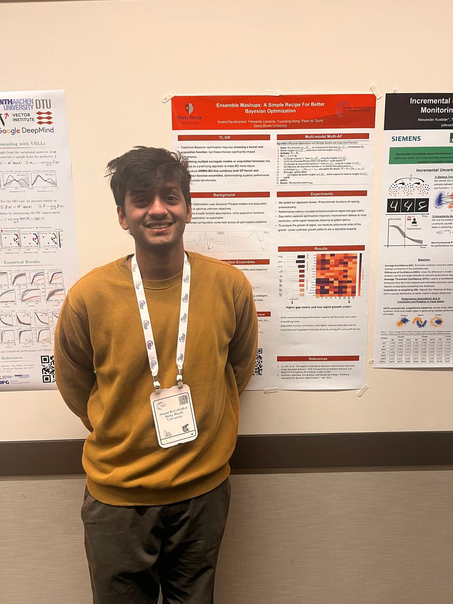

Dept. of Electrical &
Computer Engineering
Stony Brook University
Stony Brook, NY 11794
I am a PhD student in the Department of Electrical and Computer Engineering at Stony Brook University, advised by Prof. Petar M. Djurić.
I build diffusion models that never stop learning. My work explores how diffusion-based generative processes can continually absorb new knowledge — across time series, language, vision, and other modalities — without forgetting what they already know. This sits at the intersection of continual learning and deep generative modeling, and I think it's one of the key challenges standing between today's models and truly adaptive AI systems.
news
| 2026 | Paper on Continual Time Series Forecasting with Diffusion Models under Functional Regularization accepted at ICASSP 2026. |
| 2025 | Paper on Improvement-Based Acquisition Functions for Level Set Estimation accepted at EUSIPCO 2025. |
| Paper on Uncertainty Quantification in Probabilistic ML Models accepted at EUSIPCO 2025. | |
| Paper on Adaptive Acquisition in Bayesian Optimization with Agnostic Ensembles accepted at ICASSP 2025. | |
| Co-authored paper on Normal Pressure Hydrocephalus as a Disorder of the Cerebral Windkessel published in Frontiers in Neurology. | |
| 2024 | Paper on Ensemble Mashups: A Simple Recipe for Better Bayesian Optimization presented at NeurIPS Workshop 2024. |